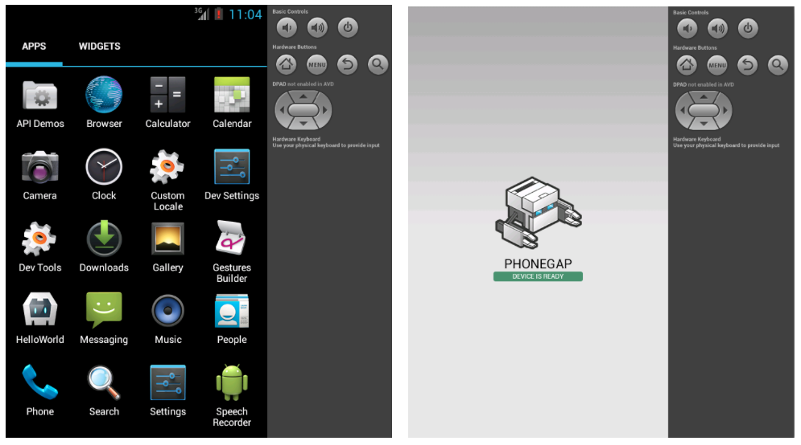

2014.01.25
Create the App
% phonegap create hello com.example.hello HelloWorld
Build the App
% cd hello
% phonegap build ios
[phonegap] detecting iOS SDK environment...
[phonegap] using the local environment
[phonegap] compiling iOS...
[phonegap] successfully compiled iOS app
Test the App on an Emulator or Device
% phonegap run android
[phonegap] detecting Android SDK environment...
[phonegap] using the local environment
[phonegap] compiling Android...
[phonegap] successfully compiled Android app
[phonegap] trying to install app onto device
[phonegap] no device was found
[phonegap] trying to install app onto emulator
[phonegap] successfully installed onto emulator
Images
こんな感じの事ができるのでいい感じに思える
実際に使ってみた感想